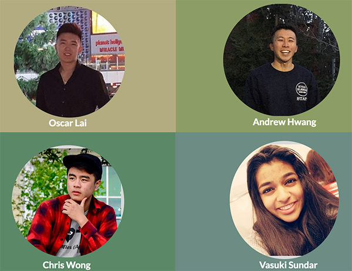

Urban Outfielders

I designed Urban Outfielders as a final project for my COGS 123 Social Computing class.
In teams of 4, we came up with a novel social computing experience that was co-located and synchronous.
We designed a mobile game for attending fans to predict the outcomes of each
at-bat to enhance their ballgame experience.
My role:
- research (observations, interviews)
- prototyping (MVP, lo-fi, hi-fi)
- prototype testing
- information architecture
